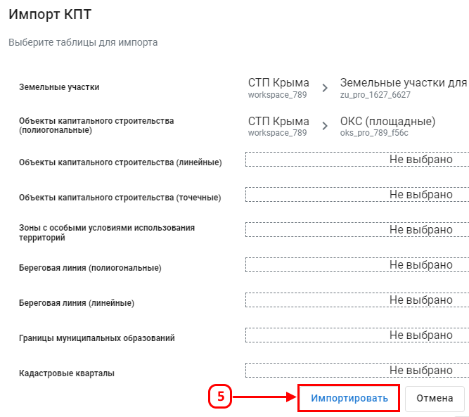
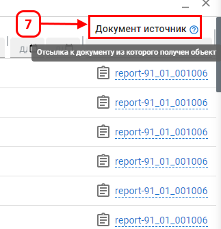

«Импорт КПТ»
Функция предназначена для загрузки кадастровых данных из документов или папок в выбранные векторные таблицы, обеспечивая обновление данных в системе.
Для выполнения импорта:
- В библиотеке КПТ выберите папку или документ с прикрепленным zip-архивом, при выборе папки все содержащиеся в ней документы будут импортированы.
- Нажмите кнопку Импорт КПТ (4).
- Выберите векторные таблицы для импорта данных и нажмите кнопку Импортировать (5).

Просмотрите статус выполнения импорта в разделе «Задачи» (6).
Процесс импорта завершен, когда в разделе «Задачи» в статусе задачи указано «Выполнена». Данные доступны для просмотра на карте или через наборы данных.
Результаты импорта:
- Данные кадастровых документов добавлены в выбранные векторные таблицы.
- Загруженные данные можно просматривать на карте или через наборы данных.
- Импортированные данные связаны с источниками (документами, архивами) (7).
